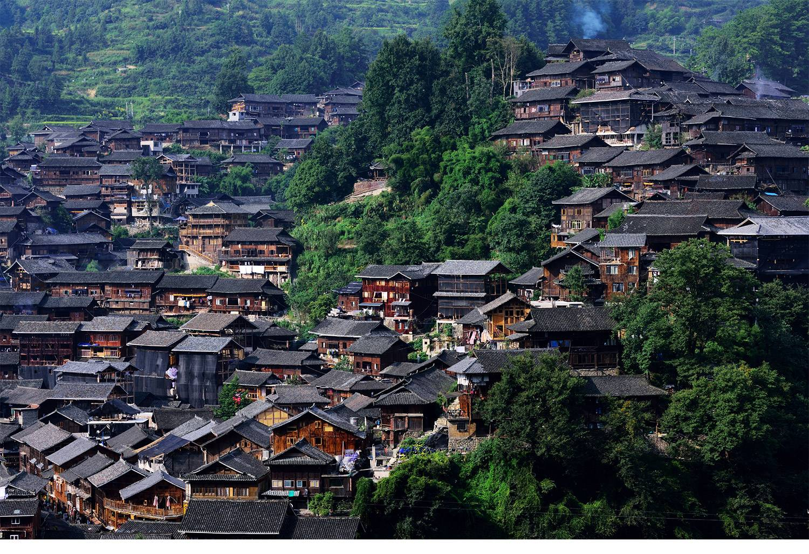

简介
西江千户苗寨位于贵州省黔东南州雷山县境内，全寨共有1468户，6000余人，其中原住居民的99.5%都是苗族，被号称为中国乃至全世界最大的苗族聚居村寨。
这里四面环山，重峦叠嶂，梯田依山顺势直连云天，白水河穿寨而过，将西江苗寨一分为二。寨内吊脚楼层层叠叠，顺山而建，又连绵成片，气势恢宏。苗族农耕、节日、银饰、歌舞及其遗风古俗在这里世代相传，不仅保留着最纯粹的自然美景，而且有着深厚的人文气息,展示着苗族漫长发展历史中积累与沉淀，具有“露天博物馆”、“中国最美的苗寨”等美称，是研究与探索苗族文化的绝佳之地。

建筑特色
这里四面环山，重峦叠嶂，梯田依山顺势直连云天，白水河穿寨而过，将西江苗寨一分为二。寨内吊脚楼层层叠叠，顺山而建，又连绵成片，气势恢宏。苗族农耕、节日、银饰、歌舞及其遗风古俗在这里世代相传，不仅保留着最纯粹的自然美景，而且有着深厚的人文气息。西江千户苗寨其深厚的文化底蕴展示着苗族漫长发展历史中积累与沉淀，具有“露天博物馆”、“中国最美的苗寨”等美称，是研究与探索苗族文化的绝佳之地。
荣誉
2011年，西江千户苗寨景区被评为国家AAAA级景区